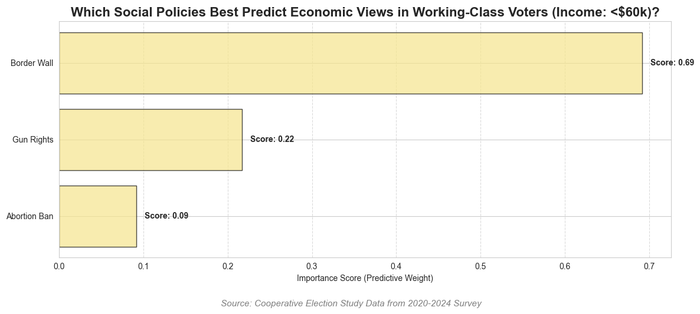

# Data setup creating more expansive dataset (copy + paste from midterm + additional variables)
# import data
my_cols = ['pid3_24', 'pid3_22', 'pid3_20', # party id
'CC24_320a', 'CC22_320a', 'CC20_320a', # presidential approval
'RC24_327a', 'CC22_327a', 'CC20_327a', #healthcare
'faminc_new_24', # family household income
'RC24_355d', 'CC22_355d', #minimum wage
'RC24_327c', 'CC22_327c', 'CC20_327d', # aca
'CC20_355b_24', 'CC20_355b_22', 'CC20_355b_20', # free trade
'educ_24', 'educ_22', 'educ_20', # educational attainment
'race_24', 'race_22', 'race_20', # race
'region_24', 'region_22', 'region_20', # region
'CC24_300a', 'CC22_300a', 'CC20_300a', # media use - TV local vs national
"CC24_300b_1", 'CC22_300b_1', 'CC20_300b_1', # media - abc
"CC24_300b_2", 'CC22_300b_2', 'CC20_300b_2', # media - cbs
"CC24_300b_3", 'CC22_300b_3', 'CC20_300b_3', # media - nbc
"CC24_300b_5", 'CC22_300b_5', 'CC20_300b_5', # media - fox
'RC24_331d', 'CC22_331d', 'CC20_331e', # build a wall
'RC24_332f', 'CC22_332f', 'CC20_332f', # ban all abortion
'RC24_330c', 'CC22_330c', 'CC20_330c', # easier for concealed carry permit
'inputstate_24', 'inputstate_22', 'inputstate_20',
'CC24_323f'
]
df = pd.read_csv('merged_recontact_2024_vv.csv', low_memory = False, usecols = my_cols)
# Cleaning up values in columns I don't need
party_id = ['pid3_24', 'pid3_22', 'pid3_20']
pres_approval = ['CC24_320a', 'CC22_320a', 'CC20_320a']
healthcare = ['RC24_327a', 'CC22_327a', 'CC20_327a']
income = ['faminc_new_24']
min_wage = ['RC24_355d', 'CC22_355d']
aca = ['RC24_327c', 'CC22_327c', 'CC20_327d']
free_trade = ['CC20_355b_24', 'CC20_355b_22', 'CC20_355b_20']
education = ['educ_24', 'educ_22', 'educ_20']
race = ['race_24', 'race_22', 'race_20']
region = ['region_24', 'region_22', 'region_20']
state = ['inputstate_24', 'inputstate_22', 'inputstate_20']
media_tv = ['CC24_300a', 'CC22_300a', 'CC20_300a']
abc = ["CC24_300b_1", 'CC22_300b_1', 'CC20_300b_1']
cbs = ["CC24_300b_2", 'CC22_300b_2', 'CC20_300b_2']
nbc = ["CC24_300b_3", 'CC22_300b_3', 'CC20_300b_3']
fox = ["CC24_300b_5", 'CC22_300b_5', 'CC20_300b_5']
wall = ['RC24_331d', 'CC22_331d', 'CC20_331e']
abortion = ['RC24_332f', 'CC22_332f', 'CC20_332f']
concealed = ['RC24_330c', 'CC22_330c', 'CC20_330c']
student_debt = ['CC24_323f']
ces = df[
(~df[party_id].isin([4, 5, 6])).all(axis=1) &
(~df[pres_approval].isin([5, 6])).all(axis=1) &
(~df[healthcare].isin([3])).all(axis=1) &
(~df[income].isin([17, 97])).all(axis=1) &
(~df[aca].isin([3])).all(axis=1) &
(~df[free_trade].isin([3])).all(axis=1) &
(~df[education].isin([7])).all(axis=1) &
(~df[race].isin([8,9])).all(axis=1) &
(~df[region].isin([5])).all(axis=1) &
(~df[media_tv].isin([4])).all(axis=1) &
(~df[abc].isin([3])).all(axis=1) &
(~df[cbs].isin([3])).all(axis=1) &
(~df[nbc].isin([3])).all(axis=1) &
(~df[fox].isin([3])).all(axis=1) &
(~df[wall].isin([3])).all(axis=1) &
(~df[abortion].isin([3])).all(axis=1) &
(~df[concealed].isin([3])).all(axis=1)
]
all_cols_to_clean = party_id + pres_approval + healthcare + income + min_wage + aca + free_trade + education + race + region + state + media_tv + abc + cbs + nbc + fox + wall + abortion + concealed
ces = ces.dropna(subset=all_cols_to_clean)
ces[all_cols_to_clean] = ces[all_cols_to_clean].astype(int)
# Renaming columns
ces = ces.rename(columns={
'pid3_24': 'party_24',
'pid3_22': 'party_22',
'pid3_20': 'party_20',
'CC24_320a': 'pres_24',
'CC22_320a': 'pres_22',
'CC20_320a': 'pres_20',
'RC24_327a': 'health_24',
'CC22_327a': 'health_22',
'CC20_327a': 'health_20',
'faminc_new_24': 'income',
'RC24_355d': 'minwage_24',
'CC22_355d': 'minwage_22',
'RC24_327c': 'aca_24',
'CC22_327c': 'aca_22',
'CC20_327d': 'aca_20',
'CC20_355b_24': 'trade_24',
'CC20_355b_22': 'trade_22',
'CC20_355b_20': 'trade_20',
'CC24_300a': 'tv_24',
'CC22_300a': 'tv_22',
'CC20_300a': 'tv_20',
"CC24_300b_1": 'abc_24',
"CC22_300b_1": 'abc_22',
"CC20_300b_1": 'abc_20',
'CC24_300b_2': 'cbs_24',
'CC22_300b_2': 'cbs_22',
'CC20_300b_2': 'cbs_20',
'CC24_300b_3': 'nbc_24',
'CC22_300b_3': 'nbc_22',
'CC20_300b_3': 'nbc_20',
"CC24_300b_5": 'fox_24',
"CC22_300b_5": 'fox_22',
"CC20_300b_5": 'fox_20',
'RC24_331d': 'wall_24',
'CC22_331d': 'wall_22',
'CC20_331e': 'wall_20',
'RC24_332f': 'abortion_24',
'CC22_332f': 'abortion_22',
'CC20_332f': 'abortion_20',
'RC24_330c': 'concealed_24',
'CC22_330c': 'concealed_22',
'CC20_330c': 'concealed_20',
'CC24_323f': 'student_debt24'
})
# new csv to see what came out of that
ces.to_csv('cleaned_data.csv', index=False)
𐦂𖨆𐀪𖠋 Does Social Policy Predict Economic Decisions?
Social policy considerations may influence the decision-making process of working-class voters. Some scholars argue that social policy holds more weight when it is time to vote, so much so that it influences an individual’s vote entirely away from other policies that may provide them with direct benefits. To test this theory, a simple machine learning model was created to test if social policy decisions could predict the way that the working class votes on economic policies.
The social policies under consideration are as follows: * Increase the Access to Concealed Carry Permits * Enstate an Universal Abortion Ban * Construct a Border Wall Between the US/Mexico
Code

Interpretation of the Model
This model shows that, while there is some influence of perceptions of social policies on economic considerations, the weightage for the social policies is not uniform. The strongest predictor of an individual’s perception of economic policy is their feelings about constructing a border wall between the US and Mexico. This means that working-class voters who support the construction of the border wall are more likely to also hold conservative views on the economy. However, gun rights and abortion bans have a lower predictive weight on economic policy considerations. This can be interpreted as how intertwined social and economic policies are in the minds of working-class voters, making it hard to use those social policies as accurate predictors.